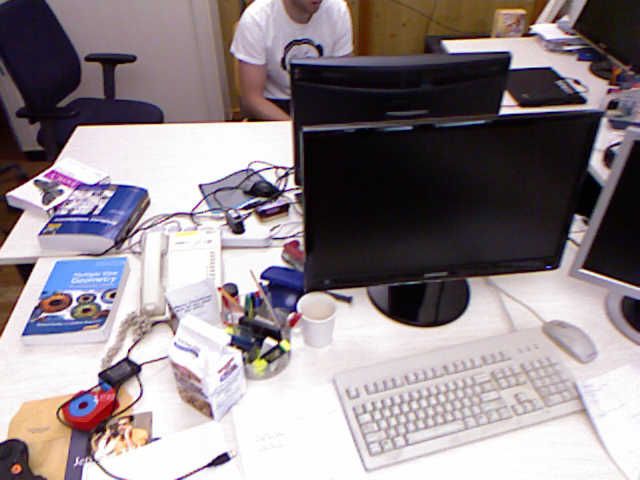
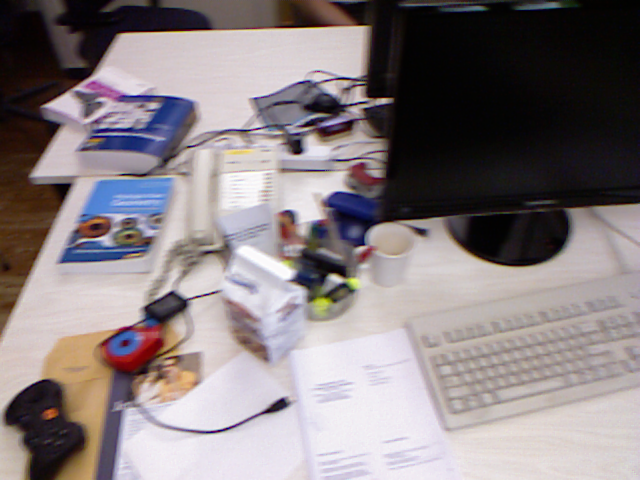
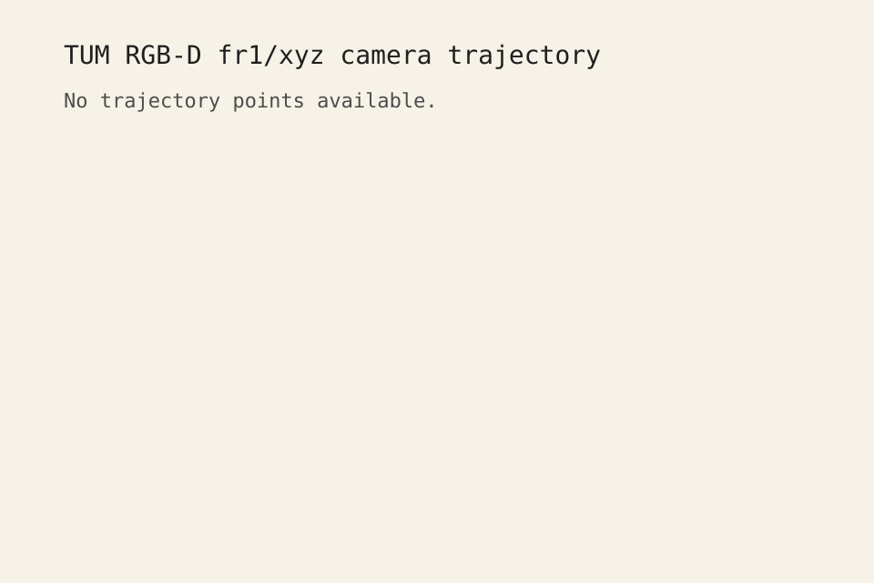

TUM RGB-D fr1/xyz clean-room sanity
Verdict: not_useful . The run did not finish with the full non-empty trajectory evidence required for a known-good baseline.
Final Exit Code
2
Associations
792
Camera Points
0
Keyframe Points
0
Camera Coverage
0.0%
Path Length
0.000 m
Sample Frames


Trajectory Plot

Run Metadata
70f1990d869f7a5b26080a9f614b00fd00f2649fmanifests/tum_rgbd_fr1_xyz_sanity.json4452a3c4ab75b1cde34e5505a36ec3f9edcdc4c4third_party/orbslam3/upstream/Examples/RGB-D/TUM1.yamlthird_party/orbslam3/upstream/Examples/RGB-D/associations/fr1_xyz.txt/usr/bin/xvfb-run -a /home/helionaut/workspaces/HEL-64/third_party/orbslam3/upstream/Examples/RGB-D/rgbd_tum /home/helionaut/workspaces/HEL-64/third_party/orbslam3/upstream/Vocabulary/ORBvoc.txt /home/helionaut/workspaces/HEL-64/third_party/orbslam3/upstream/Examples/RGB-D/TUM1.yaml /home/helionaut/workspaces/HEL-64/datasets/public/tum_rgbd/rgbd_dataset_freiburg1_xyz /home/helionaut/workspaces/HEL-64/third_party/orbslam3/upstream/Examples/RGB-D/associations/fr1_xyz.txt
Summary Metrics
- Camera displacement: 0.000 m
- Camera span: 0.000 s
- Keyframe span: 0.000 s
- X range: n/a .. n/a
- Y range: n/a .. n/a
- Z range: n/a .. n/a
Result Details
- Raw process exit code: 134
- Diagnostic toggles: max_frames=None, disable_viewer=False, skip_frame_save=False, skip_keyframe_save=False
- Camera trajectory: missing at build/tum_rgbd_fr1_xyz/trajectory/CameraTrajectory.txt
- Keyframe trajectory: missing at build/tum_rgbd_fr1_xyz/trajectory/KeyFrameTrajectory.txt
- Camera trajectory points: 0
- Keyframe trajectory points: 0
- ORB-SLAM3 did not finish with both non-empty trajectory outputs.
Artifacts
build/tum_rgbd_fr1_xyz/trajectory/CameraTrajectory.txt(0 bytes)build/tum_rgbd_fr1_xyz/trajectory/KeyFrameTrajectory.txt(0 bytes)logs/out/tum_rgbd_fr1_xyz.log(3132 bytes)reports/out/tum_rgbd_fr1_xyz.md(3776 bytes)reports/out/tum_rgbd_fr1_xyz_summary.json(5628 bytes)reports/out/tum_rgbd_fr1_xyz_trajectory.svg(381 bytes)reports/out/tum_rgbd_fr1_xyz.html(0 bytes)
{kind=link}